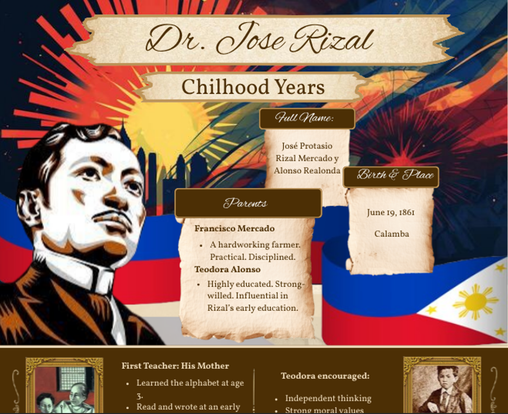
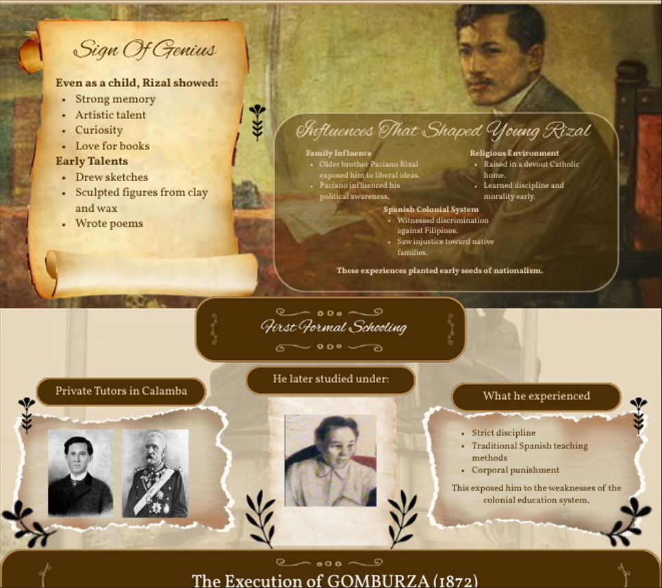
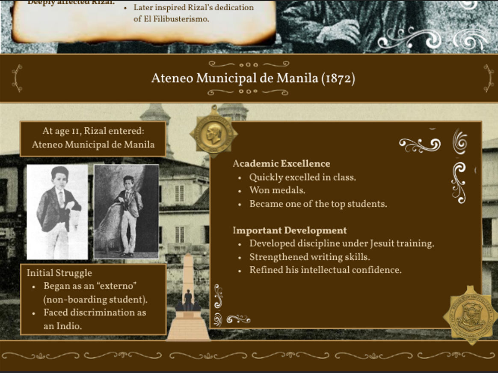

Graphic Design
Dr. Jose Rizal Infographic




OVERVIEW
For this project, I designed a comprehensive, multi-section infographic detailing the foundational years of Dr. José Rizal, the national hero of the Philippines. The goal was to transform complex biographical data into a visually engaging educational resource that highlights the influences and academic milestones that shaped his early life.
KEY FEATURES
- Thematic Visual Narrative: I used a vintage-inspired aesthetic, featuring parchment-style text boxes and a muted sepia-toned color palette, to evoke a sense of history and classic scholarship.
Structured Content Sections: I organized Rizal's life into logical chronological blocks, ranging from his Childhood Years and First Formal Schooling to pivotal historical moments like the Execution of GOMBURZA.
Typography Hierarchy: Implemented a mix of elegant script fonts for headings and clean, readable sans-serif fonts for the detailed bullet points to ensure information is both beautiful and accessible.
WHAT I LEARNED
- Thematic Consistency: I learned how to use a consistent design language (fonts, textures, and borders) to anchor a long-form infographic. This ensured that the transition from his family life to his academic struggles at Ateneo felt like a continuous story.
Precision in Layout: Working in Figma for an infographic of this scale sharpened my skills in alignment and spatial distribution, especially when managing multiple image-and-text clusters in a single vertical canvas.
TOOLS USED
Figma